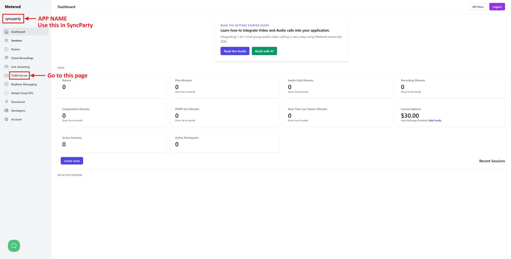
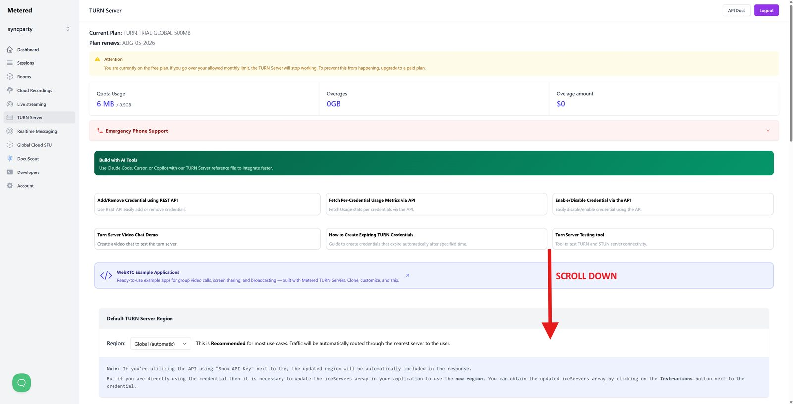
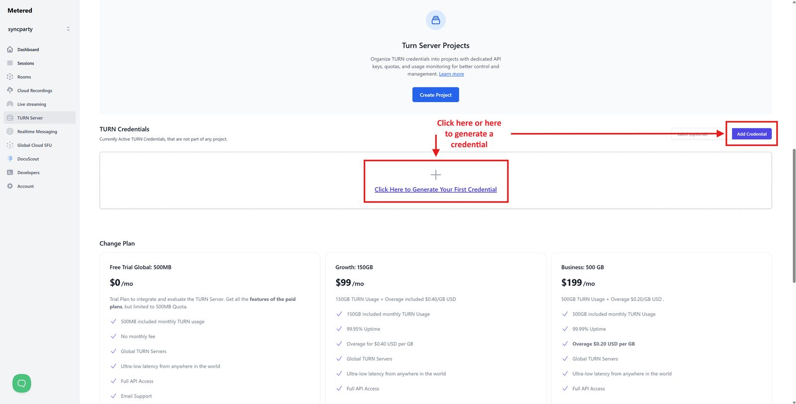
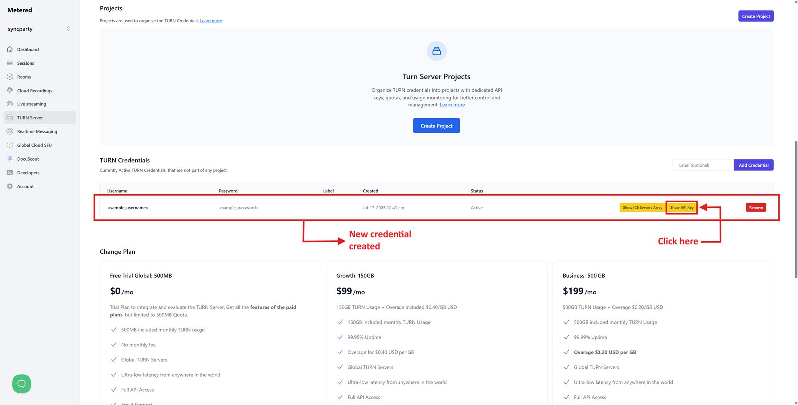
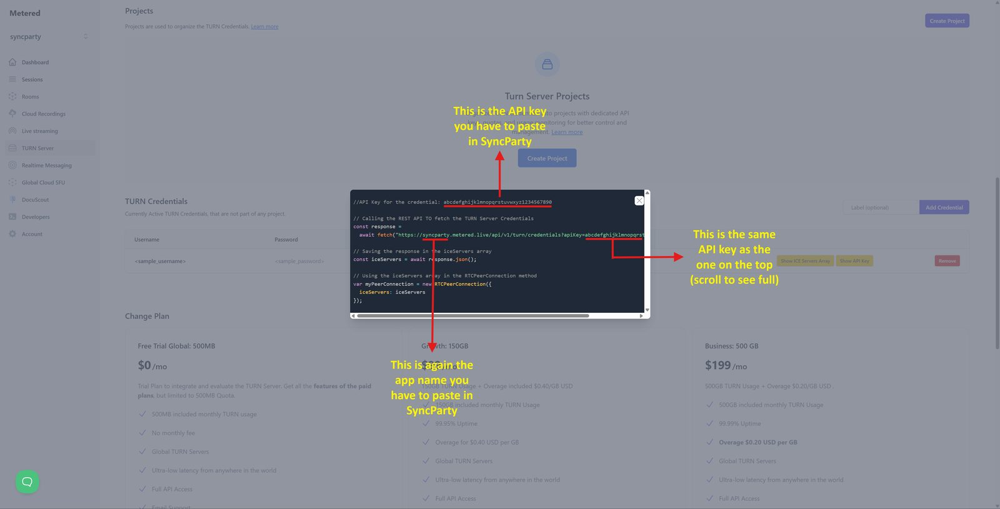

Needed only if you can sync on the same Wi-Fi but not across different networks (your internet provider likely uses CG-NAT). Takes about 3 minutes, costs nothing, and only one person in the party needs it.
Sign up at dashboard.metered.ca. Your app name is shown in the top-left of the dashboard (the part before .metered.live). Note it down, then open the TURN Server page from the left sidebar.

On the TURN Server page, scroll down until you reach the credentials section.

Click Create credential.

Your credential now exists. Click Show API Key.

Copy the key shown.

Click the SyncParty toolbar icon → Advanced settings → Connection settings.
Enter your app name and this API key, then press Test.
It should say ✓ Working! — from then on, every session automatically uses your relay, and the in-page overlay will confirm with “Connected via TURN relay ✓”.